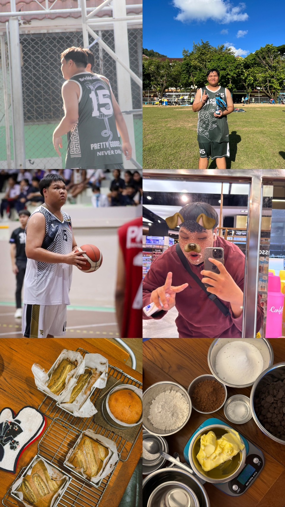

Welcome To My World
ทุกคนน่าจะดูผมแนำนำตัวคร่าวๆในวิดีโอข้างบนแล้ว เพราะงั้นในส่วนนี้ผมจะกล่าวถึงความชอบ,ความถนัดในด้านต่างๆของผมให้ทุกคนได้เห็น เริ่มจากตรงไหนก่อนดี งั้นขอเริ่มจากความชอบก่อนดีกว่า ในสมัยผมตอนเด็กๆผมชอบวาดรูปลงสีมากๆ ด้วยเหตุนี้ทำให้ผมไปลงเรียนวิชาเลือก ของโรงเรียนมัธยมของผม นั่นคือวิชาสถาปัตย์นั่นเองก็เรียนมา 2 ปี ก็คือช่วง ม.4-ม.5 พอขึ้น ม.6 ก็เลยหนีไปเรียนวิทย์สุขภาพแทนเพราะ อยากหาความท้าทายให้ตัวเองบวกกับว่า ณ ตอนนั้นมีความคิดที่จะเข้าคณะสายวิทย์สุขภาพด้วย จริงๆคือมความชอบอีกเยอะมากแต่เขียนไม่หมดแล้ว ต่อมาว่าด้วยเรื่องของความถนัด ด้วยความที่ผมเป็นคนรูปร่างสูงใหญ่ตั้งแต่เด็ก ผมเลยได้มีโอกาสเล่นหลายกีฬามาก เช่น เทควันโด,บาสเก็ตบอล,ว่ายน้ำ, ยิงปืนและอีกหลายๆอย่าง ถ้าถนัดสุดคงเป็นบาสเก็ตบอลกับเทควันโดนี่แหละครับ เพราะแข่งหลายรายการเลย แถมสักอย่างก็แล้วกันนะครับ ผมทำเบเกอรี่ด้วย ของที่ผมทำถนัดสุดก็คือบราวนี่กับเค้กหน้าไหม้ อร่อยจริงๆนะผมการันตีในระดับหนึ่งเลย
